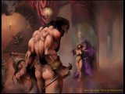
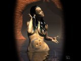

| technology |
| home page |
|  | . Apologies to all who were hoping to see their work published here. A form of musicology which applies aspects of Critical Theory as practiced within other humanities disciplines to music. A form of musicology which involves the theoretical critique of previous musicological traditions. Critical Musicology, hosted by the Department of Music at the University of Leeds, is a fully refereed critical musicology journal appearing exclusively on the Internet. |
|  |
| Adsit, EdD, Director Last modified November 9, 1999. . Walker TRC-Critical Thinking Critical Thinking What is Critical Thinking. Characteristics of Critical Thinking Why Teach Critical Thinking. Teaching Strategies to Help Promote Critical Thinking Skills References Other Reading On the Internet What is Critical Thinking. |
|